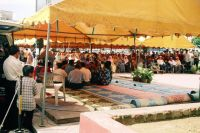

Caroline and Helen's Round-the-World Trip
Thailand
December
Thailand
Please click on a thumbnail to view the full size picture
|
Standing Buddha, Bangkok (32m high!) |
View from the Golden Mount (Phu Khau Tong temple on a big hill) |
Reclining Buddha (45m long!) in Wat Po (royal temple complex) |

A king's stupa and a wat in Wat Po |
Emerald Buddha up on high (he's actually tiny and has 3 changes of clothes for different seasons) |
A ruined temple, Ayutthaya (historic old capital) |
|
Khao Yai National Park (jungle!) |
A GIANT spider! (well, we thought he was pretty impressive) |
We went swimming under this waterfall |
|
Recognise this? It featured in The Beach |
Wat Hin Mak Peng, Sang Khom |
Than Thip waterfall, Sang Khom |
|
Our moped in Sang Khom |
Wat Sorasak, Sukhothai Historical Park |
Wat Maharat, Sukhothai Historical Park |
|
Wat Phra Kaeo within the Grand Palace complex, Bangkok |
2 funny guards (no, not us!), Grand Palace |
Vimanek Palace (made entirely of golden teak without a single nail), Bangkok |
|
View of the hills behind Kanchanaburi |
A bridge over the River Kwai, Kanchanaburi |
The Bridge over the River Kwai, Kanchanaburi |
|
Us on the Bridge over the River Kwai, Kanchanaburi |
A mynah bird who came to share our breakfast, Ko Tao (island off east coast of Thailand) |
The village we stayed in, Ko Tao |
|
View of Ko Tao |
Getting ready to dive, Ko Tao |
Fully certified (!) thanks to Jesper & Diane, our instructors |
|
Sunset from Ko Tao |
Sultan Ishmail Petra Arch & memorial, Merdeka Square, Kota Baru |

Islamic music concert in honour of the Sultan (yes, we saw him!), Kota Baru |